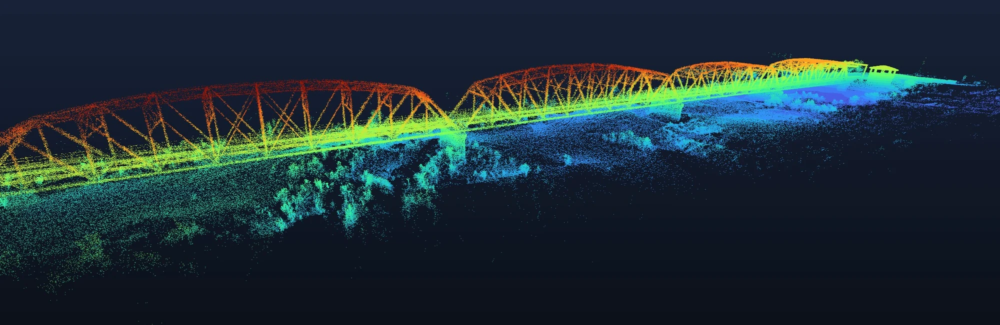

Project · Arlington, Maricopa County, Arizona
A 1927 steel truss, recorded in three dimensions.
A National Register bridge over the Gila River, documented as a measurable 3D record an engineer or a heritage program can work from without returning to the site.
What we were documenting
The Gillespie Dam Bridge carries Old US 80 over the Gila River near Arlington. Opened in 1927 and listed on the National Register since 1981, it is one of only two surviving multi-span steel through-truss bridges in Arizona. In 1993 a Gila flood destroyed Gillespie Dam outright; the bridge stayed up.
What the project required
Complete coverage of a long, thin steel structure, including the geometry that sits under the deck and out over the water, the part conventional access cannot reach economically. The record had to be positioned independently and had to state what it covered.
How Axis Fields approached it
Multiple capture technologies were integrated so that the overall structure and the close-range detail on accessible portions landed in one georeferenced record. Positioning was GNSS-based and established independently, and the reconstruction went through independent quality-control checks before delivery.
What was produced
- Textured 3D model of the full structure
- Point clouds
- Orthomosaic imagery of the crossing and approaches
- A hosted digital twin and a flythrough
- Correction state, reference frame and an explicit statement of coverage
How the information can be used
As a condition baseline for a structure still in service, as a heritage record of a listed bridge, and as measurable geometry for planning work around it, without closing the crossing to collect it.
Documentation, not a structural assessment. Validation figures are delivered with the data as a project record and are not published here.

Related
Where this fits.
Have a structure that needs recording?
A short call settles the scope, the access, the airspace and the price. No obligation, and no charge for the conversation.